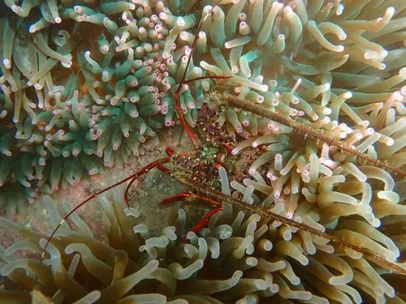

甲壳动物 · 动物界
日本龙虾 Panulirus japonicus

西太平洋的大型龙虾，体色红褐，触角粗长，没有大螯，白天藏在岩缝中，夜间出来觅食，是名贵的海产。
- 分类
- 门节肢动物门纲软甲纲目十足目科龙虾科属龙虾属
- 栖息环境
- 水深数米至数十米的岩礁海岸，白天藏在岩缝和洞穴中
- 地理分布
- 日本、朝鲜半岛南部和中国东海
- 保护级别
- IUCN 暂无评估；中国未列入国家重点保护名录
物种志
日本龙虾体长 25–30 cm，体色红褐或暗红，头胸甲和腹部布满棘刺，第二触角粗长，基部有摩擦发声器；它没有像螯虾那样的大螯，步足细长，尾部宽大。
它分布于日本、朝鲜半岛南部和中国东海的岩礁海岸，栖息于水深数米至数十米的岩缝和洞穴中，白天躲藏，夜间出来捕食贝类、海胆、小虾和藻类。日本龙虾生长缓慢，寿命可达 10 年以上，繁殖期雌虾抱卵，幼体经历长时间的叶状幼体阶段。由于肉质鲜美，它是日本和中国沿海重要的经济龙虾，野生资源受过度捕捞影响，人工放流和养殖研究正在进行；它靠触角摩擦发出声音，吓退入侵者。目前 IUCN 暂无评估；中国未列入国家重点保护名录。
形态与习性
- 食性捕食贝类、海胆、小虾和藻类
- 体长25–30 cm
- 识别体色红褐，触角粗长，没有大螯
- 习性昼伏夜出，栖息于岩缝和洞穴
- 繁殖雌虾抱卵，幼体为叶状幼体
- 经济名贵海产，野生资源受捕捞压力
趣味知识
- 日本龙虾没有大螯，靠粗长的触角和带刺的甲壳自卫。
- 它能用触角基部的结构摩擦发声，吓退靠近的敌人。
- 龙虾的叶状幼体可以随洋流漂游数月，再回到岩礁定居。